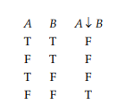
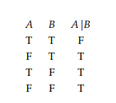

Chapter 1.3: Adequate Sets of Connectives
"Every statement form containing n statement letters generates a corresponding truth function of n arguments... Logically equivalent forms generate the same truth function." Page 19
Proposition 1.5: Page 19
Every truth function is generated by some statement form involving the propositional connectives ¬, ∧ and ∨.
Corollary 1.6: Page 21
Every truth function can be generated by a statement form containing either:
∧ and ¬, OR
∨ and ¬, OR
⇒ and ¬
Joint denial: Operation represented by (↓). Page 21
Joint denial truth table: Page 21

Alternative denial: Operation represented by (|)
Alternative denial truth table: Page 22

Proposition 1.7: Page 22
The only binary propositional connectives that, alone, are adequate for creating every truth function, are joint denial and alternative denial.
Literal: Statement letter or negation of a statement letter. Page 23
Disjunctive normal form (dnf): A disjunction of >= 1 disjuncts, where each disjunct is a conjunction of >= 1 literals. Page 23
Conjunctive normal form (cnf): A conjunction of >= 1 conjuncts, where each conjunct is a disjunction of >= 1 literals. Page 23.
Full cnf/dnf: A cnf or dnf is full if no conjunct/disjunct contains two literals with the same letter, AND if a letter that occurs in one conjunct/disjunct also occurs in all others. Page 24
Satisfiable (adj.): A statement form is satisfiable if it is true for some assignment of truth values to its statement letters. Page 24
Blatant contradiction (noun): A cnf that contains some statement letter and that statement letter's negation as conjuncts.